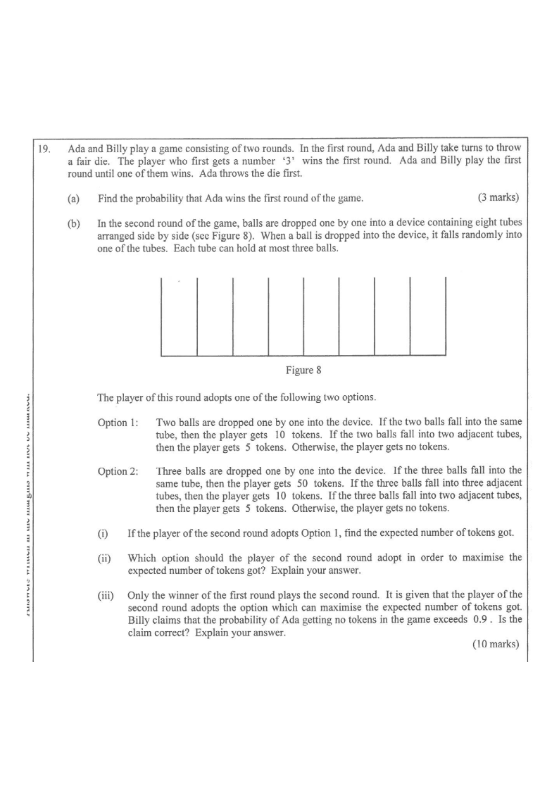

QQuestion
Ada and Billy play a game consisting of two rounds. In the first round, Ada and Billy take turns to throw a fair die. The player who first gets a number ‘3’ wins the first round. Ada and Billy play the first round until one of them wins. Ada throws the die first.
- Find the probability that Ada wins the first round of the game. [3 marks]
-
In the second round of the game, balls are dropped one by one into a device containing
eight tubes arranged side by side (see Figure 8). When a ball is dropped into the device, it falls
randomly into one of the tubes. Each tube can hold at most three balls.
The player of this round adopts one of the following two options.Figure 8
- Option 1: Two balls are dropped one by one into the device. If the two balls fall into the same tube, then the player gets 10 tokens. If the two balls fall into two adjacent tubes, then the player gets 5 tokens. Otherwise, the player gets no tokens.
- Option 2: Three balls are dropped one by one into the device. If the three balls fall into the same tube, then the player gets 50 tokens. If the three balls fall into three adjacent tubes, then the player gets 10 tokens. If the three balls fall into two adjacent tubes, then the player gets 5 tokens. Otherwise, the player gets no tokens.
- If the player of the second round adopts Option 1, find the expected number of tokens got.
- Which option should the player of the second round adopt in order to maximize the expected number of tokens got? Explain your answer.
- Only the winner of the first round plays the second round. It is given that the player of the second round adopts the option which can maximize the expected number of tokens got. Billy claims that the probability of Ada getting no tokens in the game exceeds \(0.9\). Is the claim correct? Explain your answer. [10 marks]

1Warm-up: Mutually Exclusive Events
Ada and Billy take turns. For the game to end at a given throw, every earlier throw must have failed (i.e. not rolled a 3). The "Ada wins on her 2nd throw" event, the "Ada wins on her 3rd throw" event, … are mutually exclusive, so we simply add their probabilities.
Probability of rolling a 3: \(\dfrac{1}{6}\) • Probability of not rolling a 3: \(\dfrac{5}{6}\).
2Step-by-Step Solution
Ada can win the first round on her 1st, 2nd, 3rd, … throw. For Ada to win on her \(n\)-th throw:
- Ada fails \((n-1)\) times: each with probability \(\frac{5}{6}\)
- Billy fails \(n\) times (Billy throws after each of Ada's first \(n\) throws except Ada's last): each with probability \(\frac{5}{6}\)
- Ada throws a 3: probability \(\frac{1}{6}\)
Ada winning on her 1st throw: \(\;\frac{1}{6}\)
Ada winning on her 2nd throw: \(\;\left(\frac{5}{6}\right)\left(\frac{5}{6}\right)\left(\frac{1}{6}\right)=\frac{5^2}{6^3}\) (Ada fails, Billy fails, Ada hits)
Ada winning on her 3rd throw: \(\;\left(\frac{5}{6}\right)^4\left(\frac{1}{6}\right)=\frac{5^4}{6^5}\)
Each ball falls independently into one of 8 tubes. Two balls = \(8\times 8 = 64\) equally likely ordered outcomes.
- Same tube (10 tokens): ball 2 must land in ball 1's tube → \(8\) outcomes.
- Adjacent tubes, different tubes (5 tokens): ordered choices of two adjacent tubes → \(2\times 7 = 14\) outcomes.
- Otherwise (0 tokens): the remaining \(64-8-14 = 42\) outcomes.
Three balls → \(8^3 = 512\) equally likely ordered outcomes.
Reasoning for \(P(10)\): three adjacent tubes must be distinct (1,2,3 and 2,3,4 … up to 6,7,8 → 6 sets of three adjacent tubes). Assign the three distinct balls to the three distinct tubes: \({}^3P_2 = 3! = 6\) ways.
For the 5-token prize, the three balls occupy exactly two adjacent tubes, with counts \((2,1)\) or \((1,2)\). The tubes are different, so both counts are allowed → the multiplicity factor is \(2\).
Here \(\frac{1}{8}\cdot\frac{1}{8}\) comes from ball 2 landing in ball 1's tube (probability \(\frac18\)), and \(\frac{2}{8}\) is the probability of landing in the other adjacent tube (one on each side of ball 1's tube).
Since \(\dfrac{75}{32}>\dfrac{485}{256}\), the player should adopt Option 1.
Ada gets no tokens only if she wins the first round (so she plays the second round) and then earns 0 tokens with Option 1.
3Interactive Ball Drop Simulator
Pick the maximum-EV option (Option 1 for (b)(ii)) and drop balls to see the tokens scored. The long-run average should approach \(\frac{75}{32}\approx 2.34\).
4Answer Summary
| Part | Key idea | Answer |
|---|---|---|
| (a) | Infinite geometric series, Ada throws first | \(\dfrac{6}{11}\) |
| (b)(i) | \(E(X)=\sum xP(X=x)\) with 64 outcomes | \(\dfrac{75}{32}\) |
| (b)(ii) | Compare \(\frac{75}{32}\) with \(\frac{485}{256}\) | Option 1 |
| (b)(iii) | \(P(\text{no tokens})=1-P(\text{wins})\cdot P(\text{scores})\) | \(\dfrac{13}{16}=0.8125<0.9\), claim incorrect |